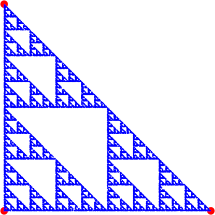
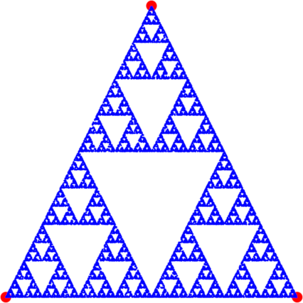
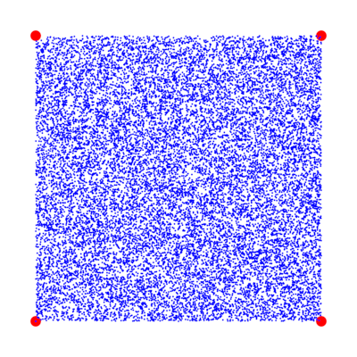
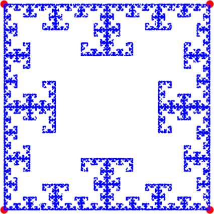

Assignment 4: The Chaos Game (25 Points)
Chris Tralie
Due Tuesday 2/25/2020
Overview / Logistics
The purpose of this assignment is to get you practice with loops and methods in a fun, visual application.
Click here to download the skeleton code for this assignment. You will be editing src/chaos/Triangle.java, and you will be creating a file src/chaos/Quad.java.
What to submit: When you are finished, you should submit these two files to Canvas, as well as a picture of the fractal you generate in part 2. Please also submit answers to the following as a comment on Canvas:
- Did you work with a buddy on this assignment? If so, who?
- Are you using up any grace points to buy lateness days? If so, how many?
- Approximately how many hours it took you to finish this assignment (I will not judge you for this at all...I am simply using it to gauge if the assignments are too easy or hard)
- Your overall impression of the assignment. Did you love it, hate it, or were you neutral? One word answers are fine, but if you have any suggestions for the future let me know.
- Any other concerns that you have. For instance, if you have a bug that you were unable to solve but you made progress, write that here. The more you articulate the problem the more partial credit you will receive (fine to leave this blank)
The Problem
Fractals are beautiful mathematical shapes which are self-similar, which means they are made up of smaller parts of themselves. Many shapes in nature are approximately fractals. Take a fern, for example. As shown below, it's possible to make a fern out of smaller ferns which are rotated, translated (moved), and scaled, but which are otherwise exactly the same. And those smaller ferns, in turn, are made up of even smaller versions of the exact same fern:
In this assignment, you will be making other types of fractals by simulating a probabilistic game known as the chaos game. This game consists of choosing some points on a polygon, and then drawing a bunch more points on the inside of that polygon by following a bunch of random steps. As such, it is a great assignment for exploring loops.
StdDraw Library
We will be using the StdDraw library from the Princeton Algorithms 4 CS library to help us draw points. Click here to see more documentation on the StdDraw library. I have provided an example program that uses StdDraw inLineSegments.java. We also filled in the program RandomCircle.java in class. Make sure you understand these programs before you continue.
Part 1: Sierpinski Triangle (10 Points)
The first fractal you will make is called the Sierpinski Triangle. You will start with three points on the 2D Cartesian plane that form a triangle. These are parameters that you will send into a void method which does the drawing. Each point has both an x and a y coordinate, so the points are
- a = (ax, ay)
- b = (bx, by)
- c = (cx, cy)
- First, draw the point a, and designate this as the last point drawn
- Randomly choose a point that's either a, b, or c. Draw a point halfway in between the last point drawn and this randomly chosen point
- Repeat step 2 for until the chosen number of samples has been drawn.
Numerical Example
As an example, consider the triangle with points a = (0, 0), b = (1, 0), and c = (1, 1). Here are the points we draw
- As always, we first draw a
- Let's say the next randomly chosen point is c. We'd draw our second point halfway in between a and c, which is at (0.5, 0.5).
- Let's then say the next point chosen is b. We'd draw the third point halfway in between (0.5, 0.5) and b = (1, 0), which is at (0.75, 0.25).
- Let's then say the next point chosen is c again. We'd then draw the fourth point halfway in between (0.75, 0.25) and c = (1, 1), which is (0.875, 0.625) .
Code To Write
You should fill in the method
This method takes in the x and y coordinates of 3 points on the triangle, as well as the number of points we aim to draw. Note that if you're generated a random object called rand (which has been provided to you in Triangle.java), then the code
will generate a random integer between 0 and 2, which you can use to help choose the next point. Below is what the output should look like for a couple of different calls to your method if it is working properly. You can copy and paste these lines to the main function to try them out
Code Example 1

Code Example 2

Part 2: Quad Fractal (15 Points)
The next step is to write a program that draws another fractal using points on a quadrilateral with points a = (ax, ay), b = (bx, by), c = (cx, cy), and d = (dx, dy). The steps are very similar to the Sierpinski Triangle steps, with one minor difference, shown in bold below
- First, draw the point a, and designate this as the last point drawn
- Randomly choose a point that's either a, b, c, or d, as long as it is different from the last point you chose (for instance, if I chose a last time, I must choose either b, c, or d this time). Draw a point halfway in between the last point drawn and this randomly chosen point
- Repeat step 2 for until the chosen number of samples has been drawn.
If you don't keep track of the point you chose last time and just randomly pick one of the four points on the quad each time, you will end up with the picture below, which is not a fractal. So if you see a result like that, you know you didn't follow the steps properly.
Code To Write
You should create a new file called Quad.java in your project. This file should contain a public static void method drawQuadChaos which takes as parameters the x and y coordinates of 4 points on a quadrilateral, as well as the number of points to draw. Try calling your method with points sampled on a square, for example:
Please submit an image of the fractal you generated along with your code for this part. You can save your image from the drawing window's menu or by taking a screenshot.
Tips
-
Since you're starting from scratch, you should use
Triangle.javaas an example of how to get the imports correct. The order of your parameters should also be similar, you just need two more coordinates than before to include the fourth point.
Extra Credit (+3 Points)
Create another version of the quadrilateral example. Assuming the points a, b, c, d are specified in either clockwise or counterclockwise order, choose your next point so that it is not two away from the previous point chosen; that is, you should always be traveling to the next or previous point specified; so, for example a goes to d or b and c goes to b or d. If this works properly, you should see a fractal like the one below:
